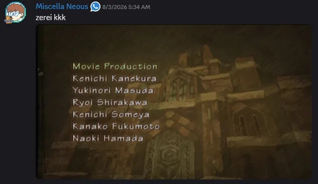

RESUMO DO DIA
Hoje aconteceu um evento histórico: Ericoco finalmente zerou Radiata Stories! 🎉

PRINT DO CRIME
Parabéns! Considerando que normalmente ele começa vários jogos e não termina nenhum, isso é uma conquista e tanto.
O cidadão conseguiu zerar um RPG obscuro de PS2, mas continua ignorando o jogo que deveria ser seu objetivo de vida.
STATUS